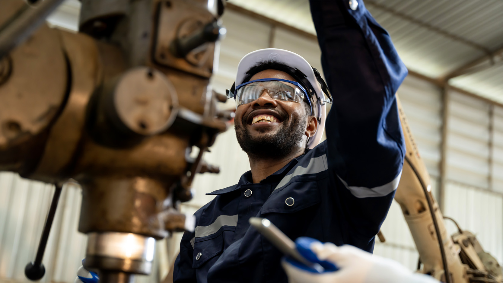

Workforce & Capability Solutions
Skilled labour readiness for energy, rare earth, and critical minerals.

Pebble Canada delivers workforce and capability solutions supporting the Canadian energy sector and the rare earth and critical minerals value chain. We enable skilled labour readiness and operational capacity in high compliance, remote, and project driven environments.
Energy and Critical Minerals Workforce Readiness
We support workforce planning and deployment across extraction, processing, logistics, and supporting infrastructure. Our approach aligns skills, roles, and readiness with operational requirements and Canadian expectations for safety, compliance, and performance.
Skilled labour deployment
Deployment models that support project execution and ongoing operations, including remote and rotational environments.
Workforce planning
Role planning and capability alignment to support productivity, safety, and reliability through the project lifecycle.
Safety and compliance
Workforce support shaped by Canadian regulatory, safety, and site standards appropriate for energy and resource operations.
Critical minerals capability
Support for workforce capacity across strategic resource supply chains including rare earth minerals and critical minerals projects.
Offshore Subcontract Workforce Model
Pebble Canada also provides offshore subcontract workforce solutions designed to support Canadian energy, infrastructure, and critical minerals projects through scalable and compliant labour supply. Our model enables clients to access qualified personnel efficiently while maintaining operational control, safety standards, and regulatory compliance.
We work alongside prime contractors and workforce partners to supply pre vetted, certified, and deployment ready personnel across a range of operational roles. This approach allows organisations to respond quickly to project demand, seasonal surges, and specialised skill requirements without increasing long term fixed overhead.
Subcontract workforce deployment
Flexible subcontract staffing models supporting short term, rotational, and long term project needs across energy and resource operations.
Recruitment and vetting
Workforce screening, credential verification, and compliance checks aligned with Canadian safety, labour, and site requirements.
Remote and high compliance readiness
Personnel prepared for remote, industrial, and high compliance environments, including rotation based deployments and site specific standards.
Workforce management support
Mobilisation coordination, readiness planning, and ongoing workforce support to ensure continuity, performance, and alignment with project objectives.
Where We Support
- › Oil and gas, power, and emerging energy projects
- › Rare earth minerals and critical minerals mining and processing
- › Resource logistics and supporting infrastructure
- › Remote and northern operations where readiness matters